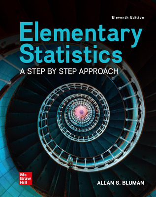

- Elementary Statistics a Step by Step Approach
- Allan G. Bluman
- Rate:
- Review:

- Fair and Foul: Beyond the Myths and Paradoxes of Sport
- D. Stanley Eitzen
- Rate:
- Review:

- Pride and Prejudice
- Jane Austen
- Rate:
- Review:

- Managing Stress: Skills for Self Care, Personal Resiliency, and work-life balance in a Rapidly Changing World
- Brian Luke Seaward
- Rate:
- Review: